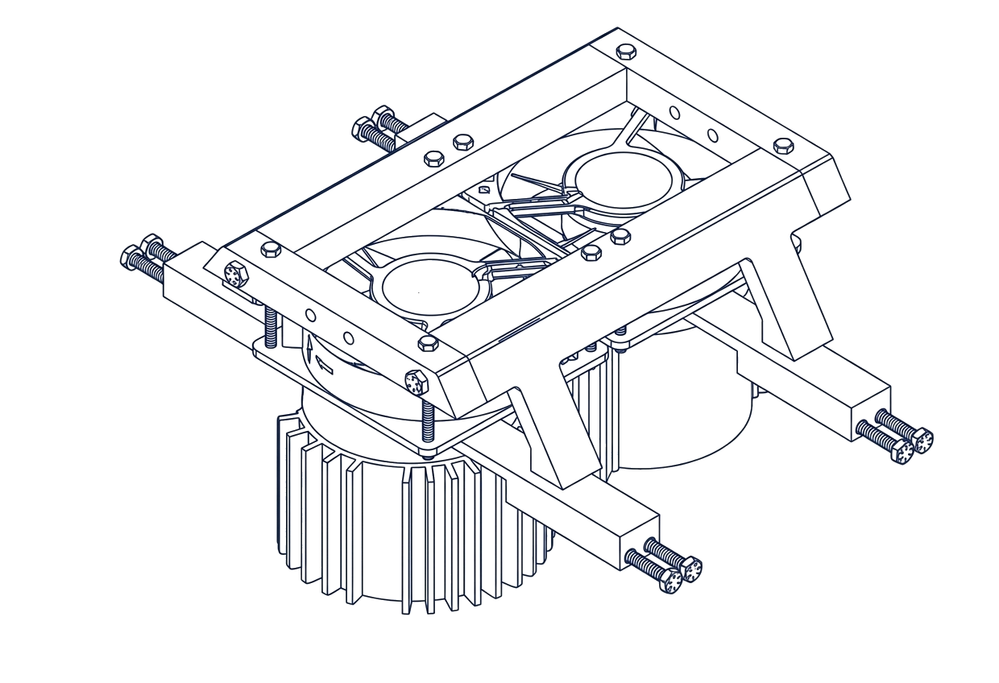
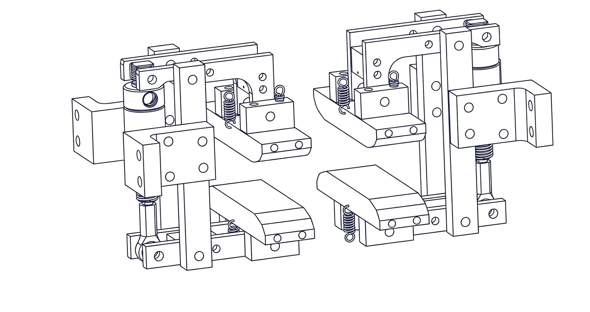
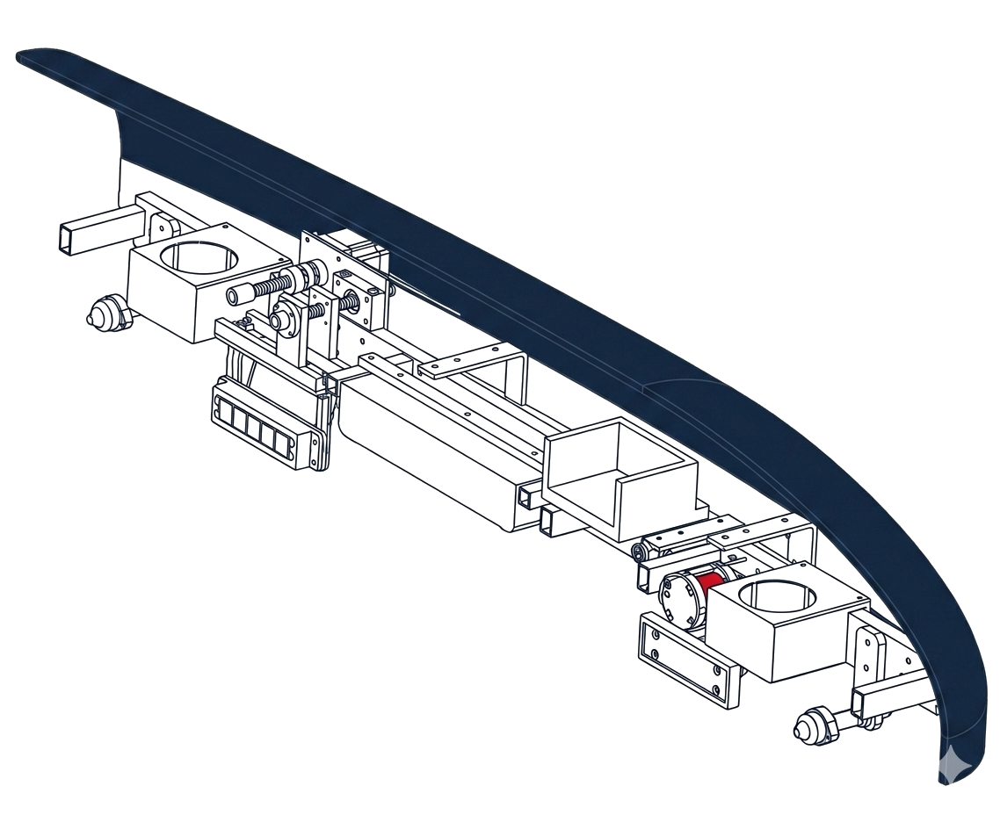

Revolutionizing
Transportation
Cornell's student lead project team designing and innovating hyperloop pods at the frontier of transport technology.




The Fifth Mode
of Transport
Cornell Hyperloop is engineering the "fifth mode of transport": a high-speed transit system designed to move pods through low-pressure vacuum tubes. By eliminating air resistance and surface friction, we are building the foundation for sustainable, 700-mph ground travel.

Watch our scale-model pod in action — magnetic levitation and LIM propulsion on the test track.

Full assembly CAD of our 2025 competition pod, integrating levitation, propulsion, and structural subsystems.
Our team contributes to this global vision by designing and prototyping autonomous, scale-model pods. We focus on mastering the two core challenges of hyperloop physics: Magnetic Levitation to eliminate contact with the track, and Linear Induction Motors (LIM) to provide efficient electromagnetic propulsion. Through hands-on research and iterative testing, we bridge the gap between theoretical physics and the future of scalable infrastructure.
Competing
Globally
Cornell Hyperloop competes in the Hyperloop Global Competition (formerly Canadian Hyperloop Conference) and European Hyperloop Week each year in the summer.
Check out our Cornell Daily Sun feature — click the image to the right.
Subsystem Architecture
Mechanical
Designing the chassis, braking systems, and structural housing required to withstand extreme g-forces and ensure passenger safety at terminal velocities.
Electrical
Developing high-voltage battery packs, power distribution boards, and custom PCBs to supply reliable energy to all critical pod functions.
Business
Managing sponsorships, outreach, and team operations to sustain and grow Cornell Hyperloop's presence in the broader engineering and innovation community.